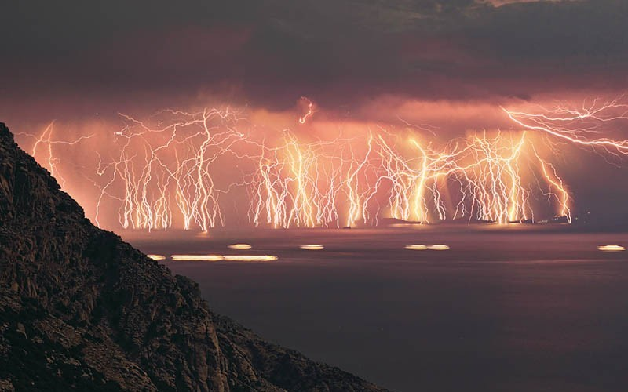
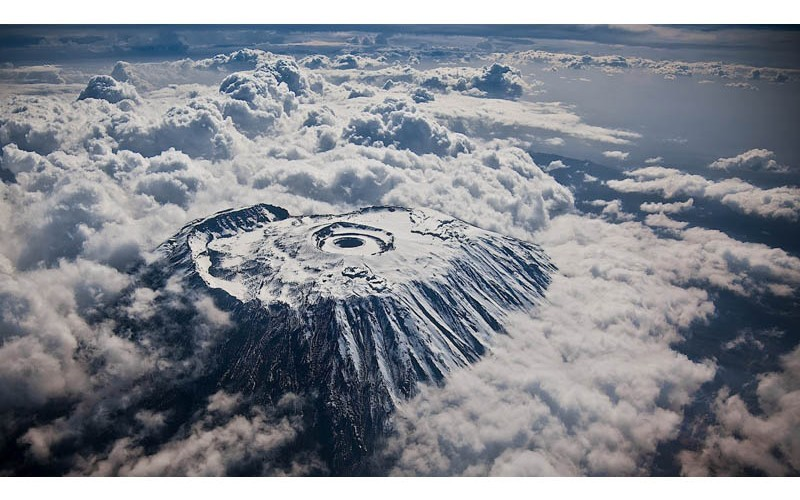
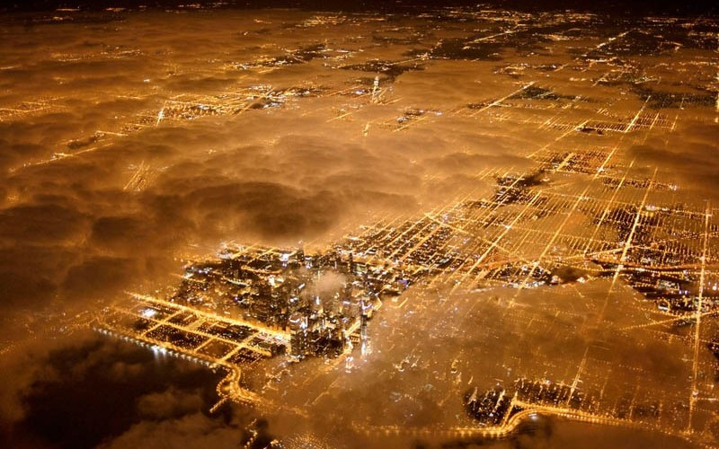
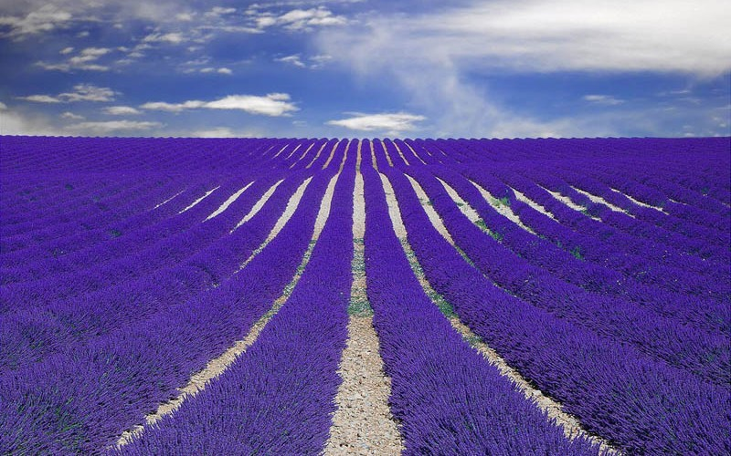
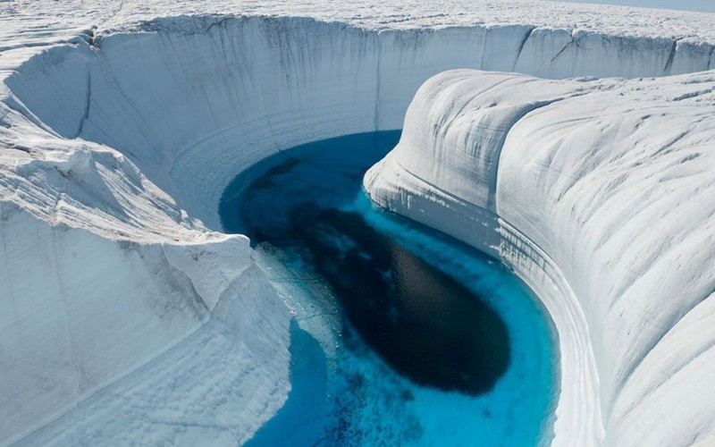
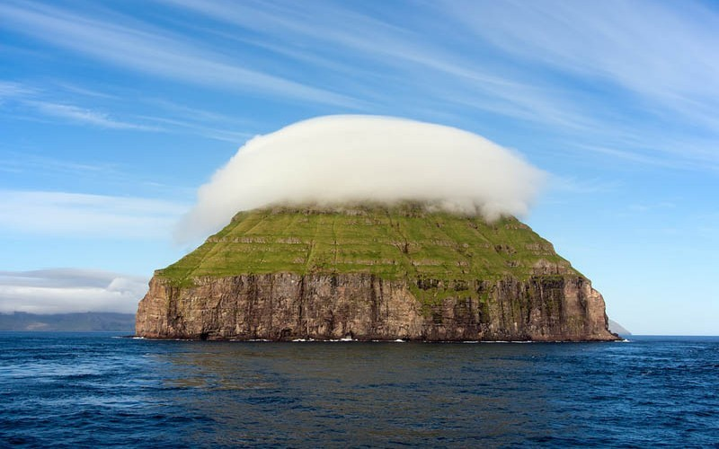
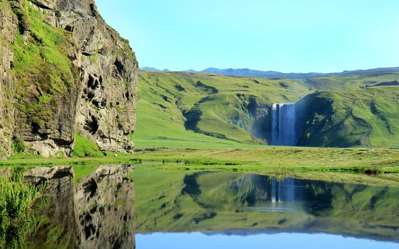

Ваші фотографії
Вогонь в небі. Острів Ікарія
Засніжена вершина згаслого вулкану Кіліманджаро, Танзанія
Вогні нічного Чикаго, США
Квітучі лавандові поля, Прованс, Франція
Крижаний каньйон Гренландії
Litla Dimun – острів з короною із хмар, Фарерські острови
Водоспад Скогафос, Ісландія
На головну